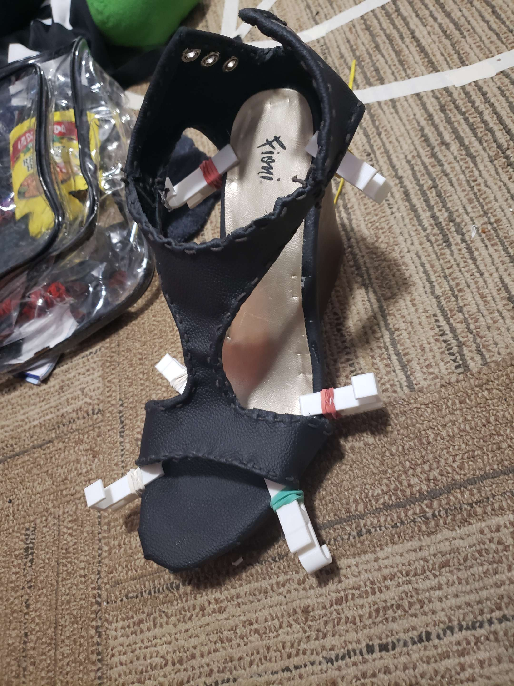
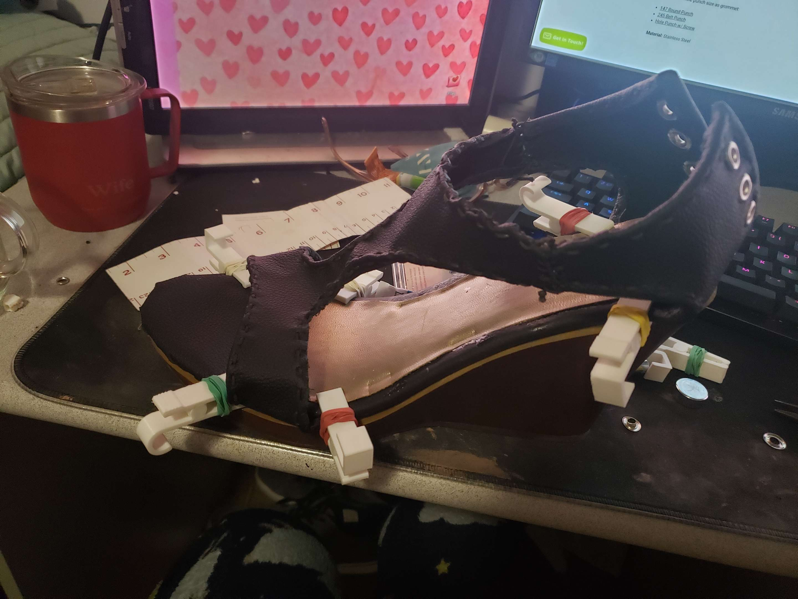
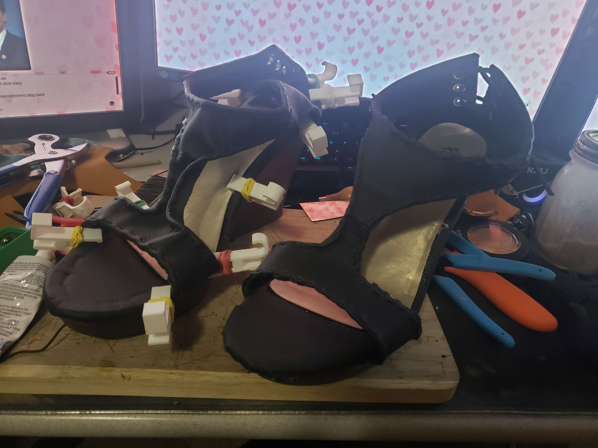
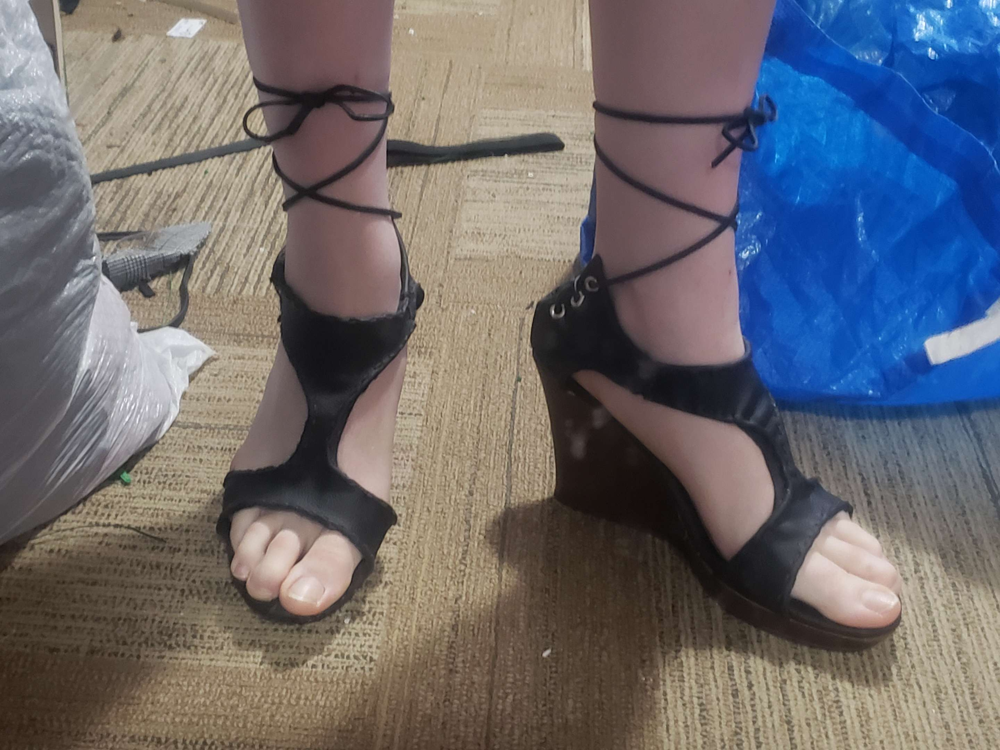
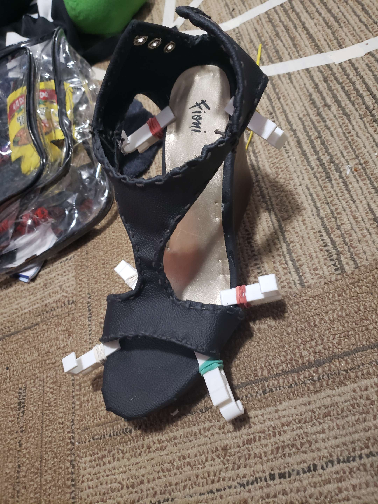
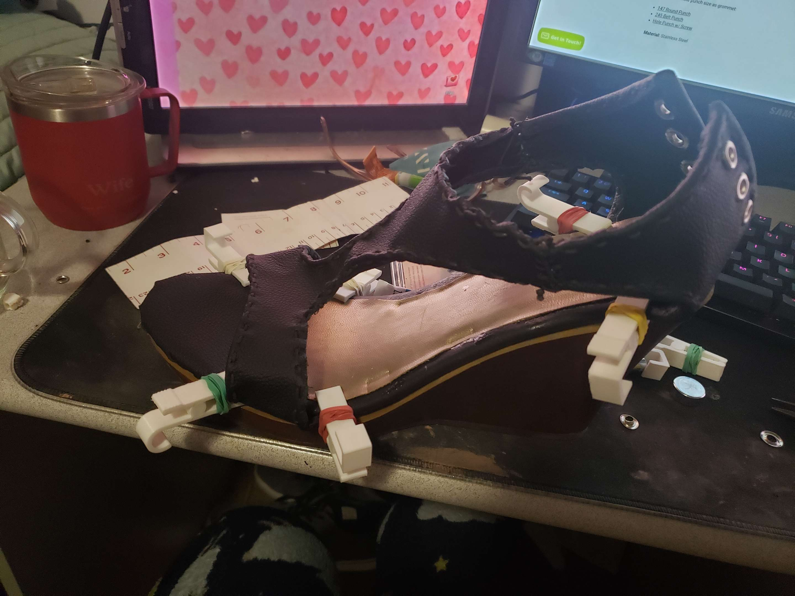
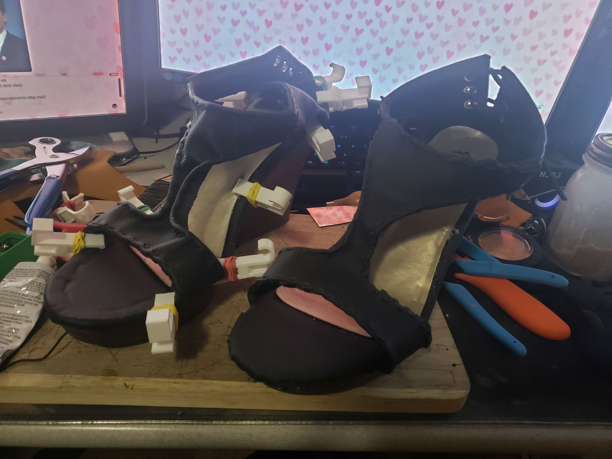
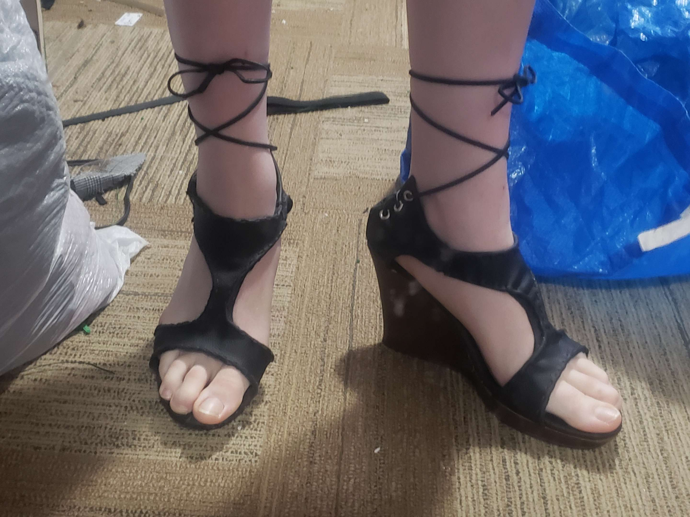

Shoes
(Mar 13 2023)
I have large feet, and i mean like, hard to find anything in my size large. One day my aunt gave me some yellow wedge shoes and i was ecstatic because i finally had some in my size. Unfortunately, they were yellow and i have a long standing vendetta against the color yellow. Not wanting to give up hope, i decided to remake them with black leather. Half my wardrobe being black, i knew i'd at least be able to match them with something. I took apart the shoe and used the fabric it was made of as a pattern for the new shoe. both shoes have the same pattern, but look slightly different because i learned different techniques throughout the building of the shoes. From far away you can't tell though. I added a lace up back and ankle tie.
 






